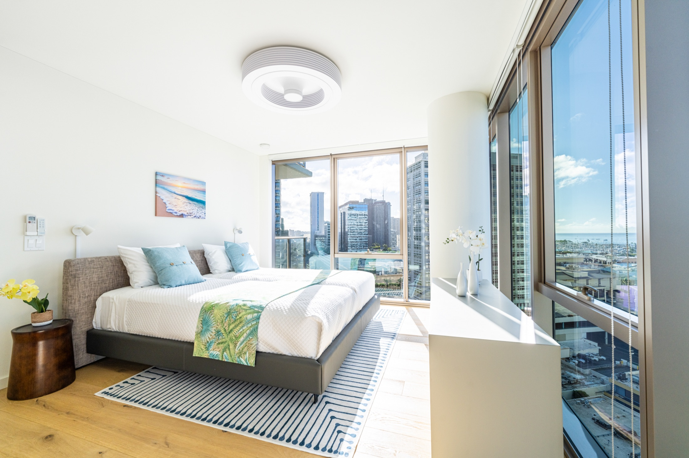

Productionへ戻る
02 / Production
Virtual Staging
空室や未完成の空間に、暮らしのイメージを加える。不動産写真の第一印象を高め、物件の魅力をより伝わるビジュアルへ整えます。

Before / After
空室から、暮らしが見える部屋へ
家具や小物を自然に配置し、物件の広さ、光、眺望を生かしたビジュアルへ。写真を見た瞬間に、そこで過ごすイメージが立ち上がる状態を目指します。

Quality Control
量産と品質を両立する
毎月数百枚の編集に対応。トーン、明るさ、納品仕様を管理し、安定した品質で物件の魅力を届けます。


対応領域
賃貸 / 売買 / モデルルーム / 宿泊施設 / 商業空間 / EC向け物件素材